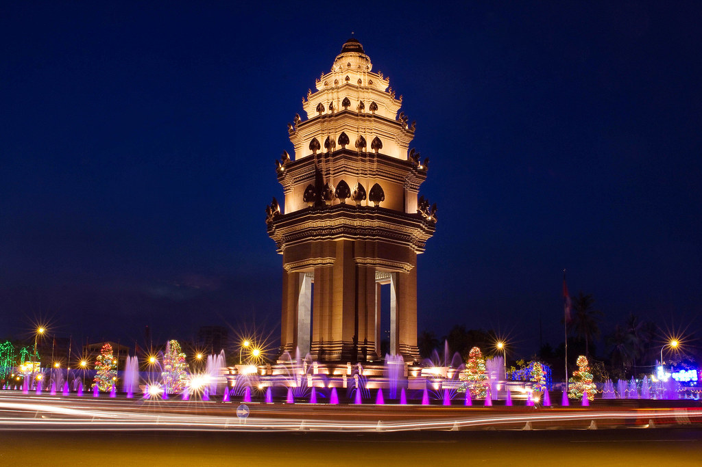
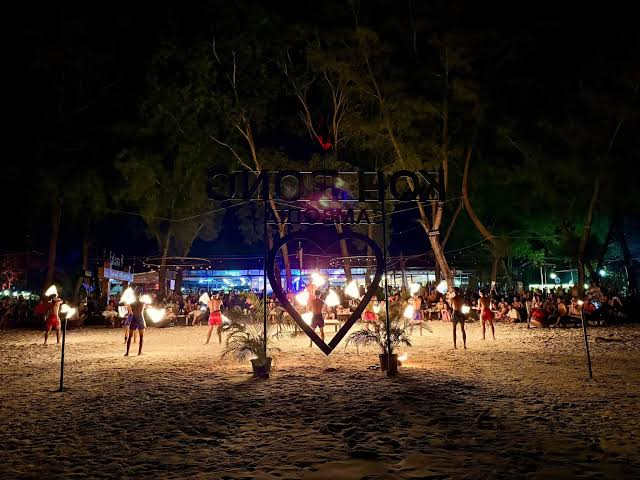
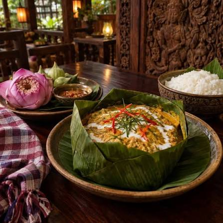
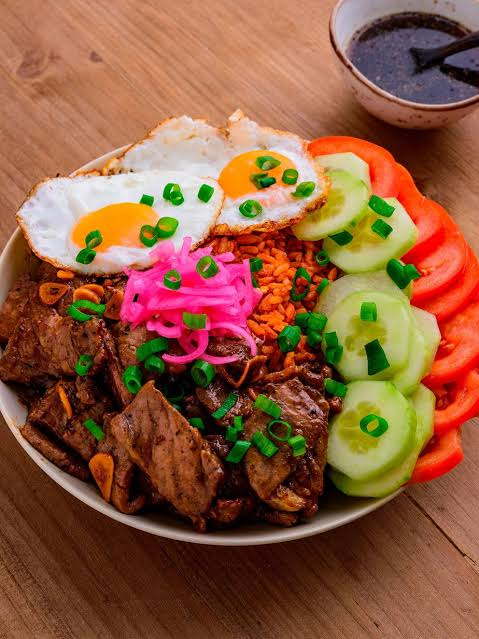
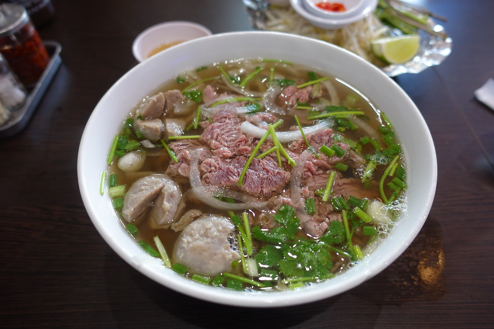
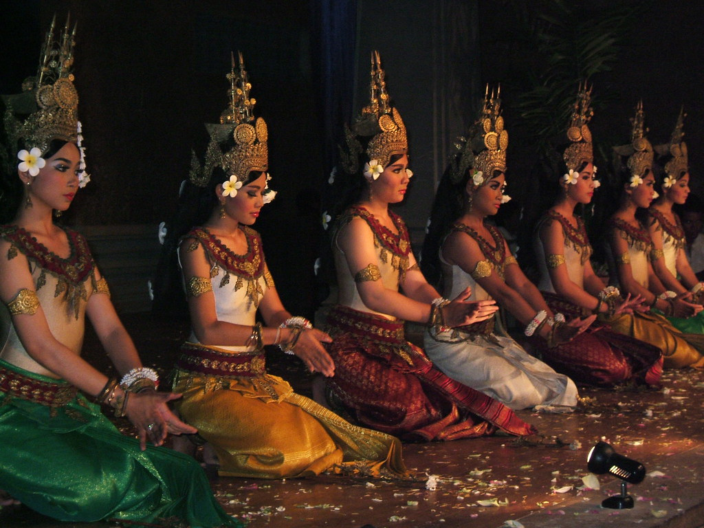
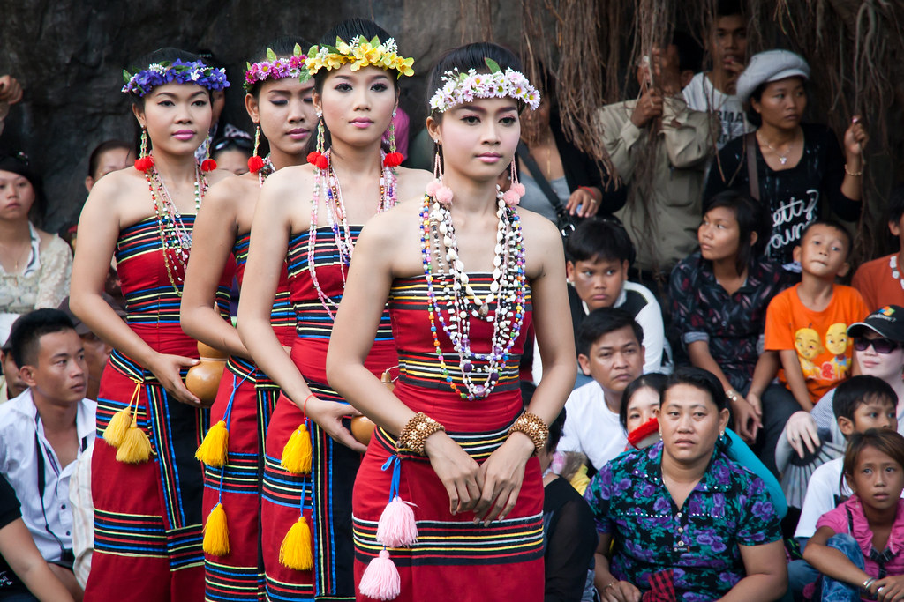
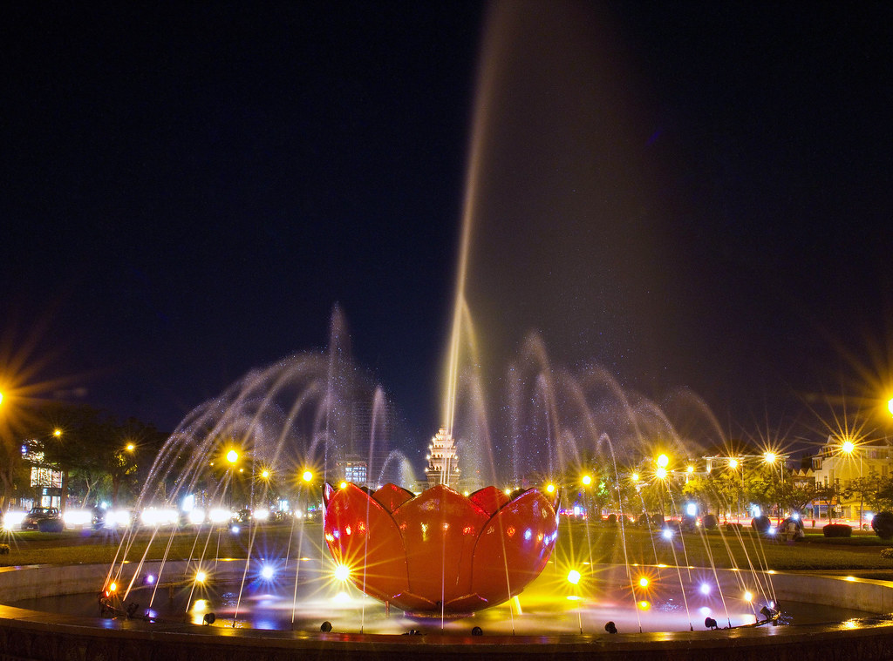
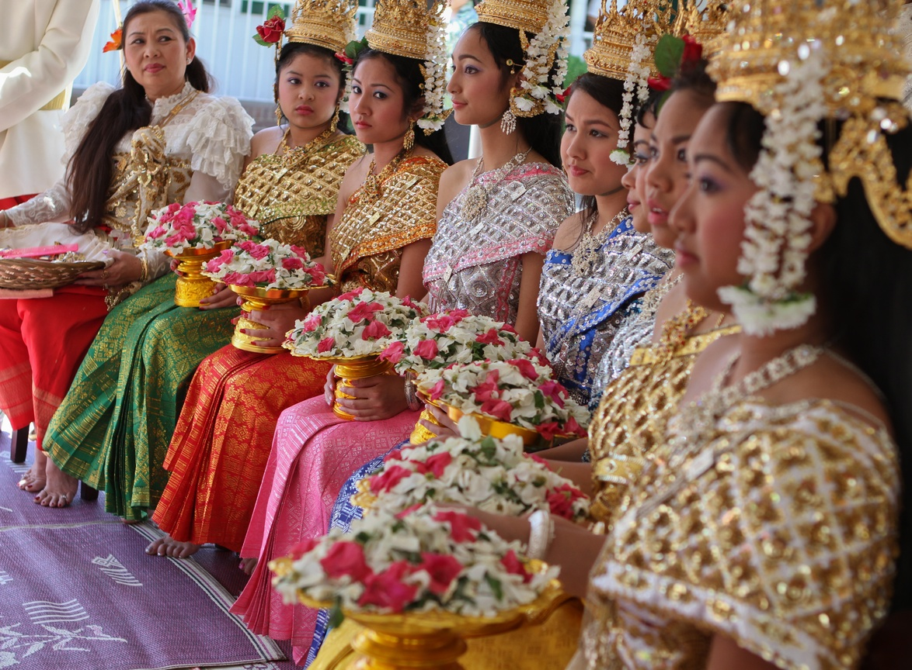
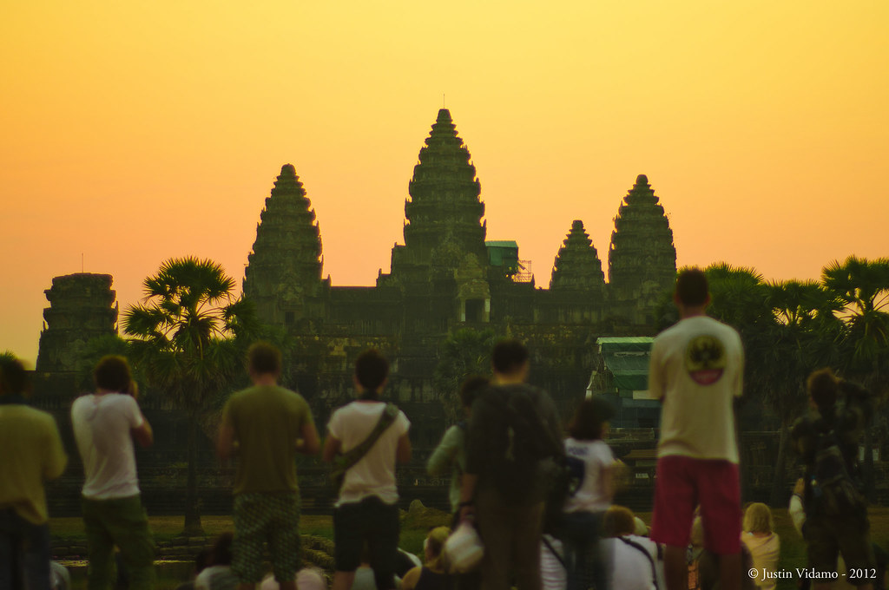

Angkor Wat is the largest religious monument in the world and Cambodia's most famous landmark. Located in Siem Reap, this magnificent temple complex attracts millions of visitors each year and is especially stunning at sunrise.

The capital city combines modern development with historical landmarks such as the Royal Palace, Silver Pagoda, and National Museum. The riverside area is popular for dining, shopping, and evening walks.

Koh Rong is famous for its white-sand beaches, turquoise water, and tropical atmosphere. It is the perfect destination for relaxation, swimming, and island exploration.

Cambodia's national dish. A rich curry made with fish, coconut milk, and local spices, traditionally steamed in banana leaves.

Tender stir-fried beef served with rice, vegetables, and a flavorful lime and pepper dipping sauce.

A popular breakfast dish featuring fresh rice noodles, herbs, meat, and aromatic curry-based sauces.
Cambodia's premier performing art form originated in the royal courts. It features slow, figurative movements, arched spines, flexed fingers, and elaborate gold headdresses and silk costumes accompanied by a traditional percussion orchestra.

Some examples include:
Representing rural village life, work, and nature with a faster tempo and mahori musical accompaniment.
Some examples include:
These are more modern dancing in Cambodian Culture.

Some examples include:

The dry season from November to April offers warm weather and ideal conditions for sightseeing and beach activities.

Cambodia uses the Cambodian Riel (KHR), though United States Dollars are commonly accepted throughout the country.

Visitors should dress respectfully when entering temples and religious sites. Cambodians are known for their hospitality and friendly nature.